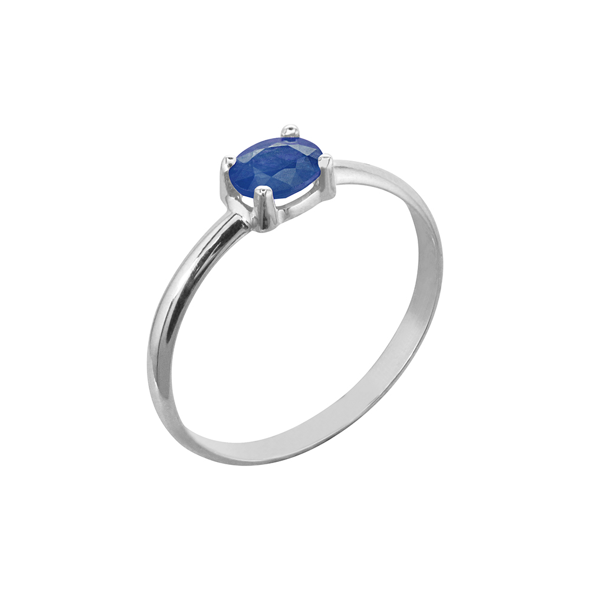

Anillo de Zafiro
Exclusivo anillo de oro blanco de 14K con zafiro natural. El zafiro tiene un color azul intenso y un corte redondo. La banda del anillo tiene un diseño clásico y elegante, lo que lo convierte en un regalo perfecto para esa persona especial en tu vida.
Disponible en oro blanco, oro amarillo y oro rosa 18k.
En Joyería Vera, nos enorgullece ofrecer joyas de alta calidad con diseños únicos, y este anillo de zafiro no es una excepción. ¡Ordene el suyo hoy!
Precio: 513,00€